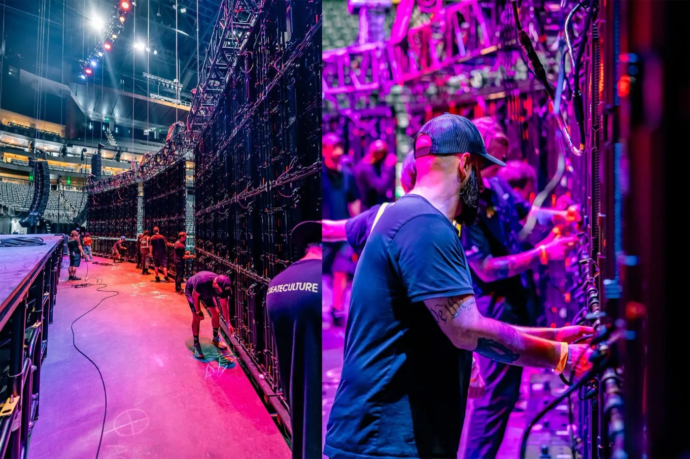
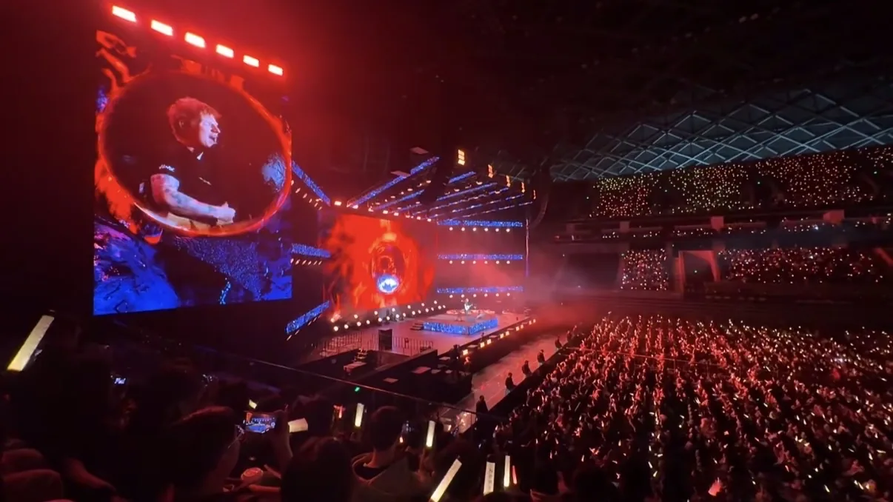

What is a touring LED power distro and power budget? It is the plan that gets alternating current from a venue company switch, a generator or a house feed, through a distribution rack and the tour’s chosen connectors, to the cabinets that make up a rental LED wall. The buying decision is not which power-supply brand sits inside a cabinet. It is whether the RFQ states the AC load, the connector standard, who supplies the distro, and how the budget was calculated — or whether a cabinet DC voltage, a “low power” claim or a generic indoor circuit plan is left to stand in for a show call.
This guide is for rental companies, touring electricians, production electricians and integrators writing a concert, festival or temporary stage wall. It covers only the touring feeder, the distro and the power budget. Cabinet power-supply sizing and backup PSUs belong in the LED wall power supply guide. Fixed-install circuits, cable and protection are covered in the power-distribution guide and the power-design guide; those pages should be read for the electrical principles, not copied in as a tour rider. Signal, power and receiving-card redundancy for a live show is a separate clause and is covered in the rental LED wall redundancy guide. Cabinet choice for the road is covered in the COB rental touring guide.
A tour does not plug a wall into a building circuit that was designed with the screen. The feed may be a company switch, a generator, or a house service that also has to run audio, lighting and video. The connector may be Cam-Lok, a PowerLock or a local equivalent, or a venue-specific inlet the wall has never seen. Load-in is short, the wall is rebuilt every day or every week, and the person who signs the electrical rider is often not the person who chose the cabinets. If the RFQ only names a pitch, a cabinet size and “power included,” the bidder is free to quote the DC side of a module and leave the feeder, the distro, the inrush and the connector adapter to the site — or to discover, late, that the wall will not start on the allocated service.
Say, in writing, where the house or generator world ends and the LED world begins. A complete distro package supplied with the wall is one design. Cabinets that land on a distro the production already carries is another. Either can be correct; the specification should choose one, and it should say who sizes, supplies, earths and supports that edge.
A useful touring budget is specific about the AC side, the condition and the method, without copying a vendor brochure into the rider:
This article does not invent a kilowatt figure, a Cam-Lok amperage, a three-phase recipe or a diversity factor. Those numbers belong to the proposed wall, the proposed brightness and the allocated service. Put the house or generator format in the annex and ask the bidder to design to it, rather than asking them to guess, or treating a cabinet DC current as if it were a feeder rating.
Figure 1 shows the rear of a touring LED wall during load-in: a flown cabinet array being cabled on one side, and technicians making power and signal connections at the cabinet backs on the other. The last hop from the distro to those cabinets is part of the budget, not only the connector at the company switch.

None of the Asia Vision rental pages used for touring work publish a Cam-Lok or PowerLock connector, an AC feeder rating, a distro model, a wall-level kilowatt budget, a power-factor or inrush figure, or a three-phase or generator statement. That is the starting point for the RFQ: the AC interface and the budget have to be requested and confirmed on the quotation for the proposed series, pitch and array. Do not infer a feeder plan from brightness, from a “low power” phrase, or from a published DC voltage.
What those pages do publish, and what is relevant to choosing a touring cabinet rather than to certifying the distro, is the following. S Series is a competitive indoor and outdoor rental platform for events, stages, churches and temporary installations, with SMD P1.95 / P2.6 / P2.97 / P3.91 indoors and P2.97 / P3.91 / P4.81 outdoors, a 250 × 250 mm indoor module and a 250 × 500 mm outdoor module, and a unified 500 × 500 / 500 × 1000 mm cabinet platform (indoor, no backshell; outdoor, a plastic backshell). The page states that indoor and outdoor models share a control system, and that locking and power details can differ between indoor and outdoor builds. It does not publish a supply voltage, a current, a wattage or a connector in the short specification table.
COB ZH is a heavy-duty COB touring series for stages and outdoor events: P1.95 / P2.6, flip-chip COB, module 250 × 250 mm, die-cast aluminium cabinet 500 × 1000 × 94 mm, refresh ≥7680 Hz, brightness 4000 cd/m², contrast ≥10000:1, curving −7.5° to +7.5°, and wind resistance up to 20 m/s. The page mentions optional common cathode for energy-saving and describes “low power consumption” qualitatively. It also notes that the larger 500 × 1000 mm cabinet reduces the number of locks, rigging points and cable runs per square metre. None of that is an AC budget, a distro specification or a connector standard. COB Z is a rental COB series (P1.95 / P2.6, optional virtual P0.97 / P1.3, flip chip, 250 × 250 mm module, 500 × 500 mm cabinet with ±5° arc and right-angle splicing, no backshell, refresh ≥7680 Hz, brightness 1200 cd/m², DC 4.2 V, max current 6 A). The published voltage and current are the cabinet DC supply, not an AC feeder, not a Cam-Lok rating, and not a wall-level power budget. A high published brightness or refresh rate is a picture or camera-scanning property of the wall, not evidence that the tour’s distro has been sized.
Figure 2 shows a live arena show with a large side LED screen, a lit stage and a standing audience. The wall has to start and stay up on the allocated service for the length of the concert; that is the condition the power budget should be written to, not a showroom average.

There is no single correct connector. Cam-Lok is common on many North American tours and venues; PowerLock and other single-pole or multi-pin house standards are common elsewhere; some buildings will only offer a local inlet. The specification should name the standard the production will actually meet, including who supplies tails or adapters, rather than assuming a cabinet power inlet is already that connector. A distro rack that breaks a feeder out to protected circuits for the wall can be supplied with the hire, or it can be a house or production rack the LED company lands on. Either design is workable if it is stated, earth is defined, and the last hop to the cabinets is in someone’s scope.
What the specification must not do is treat the cabinet DC side as the touring plan. A published 4.2 V and 6 A figure on COB Z, or a qualitative energy-saving or “low power” claim on COB ZH, tells you something about the module or the cabinet. It does not tell you the AC current at the company switch, the inrush when a large wall is energised, how the phases are balanced, or whether the indoor and outdoor builds of a series share a power inlet. If a gateway, a processor or a fibre extender shares the same feed, say so. If outdoor or wet-stage tails are required, say so. Leave the edge unnamed, and the late addition is usually a distro, an adapter or a service the wall cannot start on.
A workable touring-power RFQ states the allocated feed and the edge, and it asks for a budget rather than a brand preference:
Attach the allocated service, the connector the venue or the tour already uses, whether the wall is indoor, outdoor or both, the array size, and whether processors and racks share the feed. If your production electrician has already set a load cap or a connector standard, put that in the annex and ask the bidder to design to it. Product pages publish a 3-year warranty and 18-day standard delivery; a distro package, a site-specific adapter, a load study or a commissioning visit can take longer, and that time should sit in the programme rather than in the shipping promise.
For a workhorse indoor or outdoor rental wall on a unified cabinet platform, start with S Series. For a heavy-duty outdoor or festival touring wall, start with COB ZH. For a rental COB wall on indoor stages and camera-facing events, start with COB Z. Send the wall size, indoor or outdoor use, the allocated feed if you have it (voltage, phase and connector), and whether you need a distro with the hire or will land on a house or production rack. We will confirm the cabinet series and, on the quotation, any power, connector or distro options that can be offered. We will not invent a Cam-Lok rating, a kilowatt budget or an AC feeder figure that is not published on the product page. Start the enquiry through the contact form.
Specifying a touring or festival wall where the feeder, the connector and the power budget matter? Send the wall size, indoor or outdoor use, and the allocated feed if you have it, and we will reply with the cabinet data and any power or distro details that can be confirmed for that configuration. Start a project enquiry.